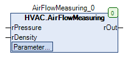

AirFlowMeasuring (FB)¶
FUNCTION_BLOCK AirFlowMeasuring
Short Description¶
Calculation of the actual volume flow via a ring measuring nozzleTypical application: Calculation of the current volume flow of a fan
Portrayal¶

Functional Description¶
General¶
This function block is used to calculate the current volume flow of a fan on the basis of the pressure difference, which is permanently measured by a measuring device ( = ring measuring nozzle ).
Recording of the current air density rDensity
For calculations with reduced accuracy, the specification of a constant is sufficient.
For calculations with increased accuracy, it is necessary to calculate the air density as a function of the current temperature, relative humidity, air pressure and saturation vapour pressure.
If the current value for the air density falls below 0.1 kg/m³, it is limited to 0.1 kg/m³.
Selection of the calculation formula eMode¶
This setpoints / parameter is used to select the underlying calculation formula. The calculation formula and the k_Value must always be requested from the fan manufacturer for the specific system.
eMode Formula
Notes
eAirFlowFormula.exclusiveAirtight rOut = k_Value multiplied by the root of rPressure
Manufacturer: e.g. EBM-Papst, Ziehl-Abegg
eAirFlowFormula.inclusiveAirtight rOut = k_Value multiplied by root from (( 2 multiplied by rPressure ) divided by ( rDensity ))
Manufacturer: e.g. Rosenberg, Gebhardt Nicotra
eAirFlowFormula.strangeForm Placeholder for extensions
rOut = 0.0 constant
Calculation factor k_Value¶
This setpoints / parameter is used to enter the calculation factor. The calculation formula and the k_Value must always be requested from the fan manufacturer for the specific system.
Visualization¶
Codesys¶
- InOut:
Scope Name Type Initial Comment Input rPressure REAL Input for the pressure sensor in Pa ( 100 000 Pa = 1000 mbar = 1,000 bar ), lower limit = 0.0 Pa
rDensity REAL 1.2 Input for air density = 1.2041 kg/m³ at 20 °C and at sea level ( = 0m ), lower limit = 0.1 kg/m³
Output rOut REAL Calculated air volume in m³/h
Input k_Value REAL 200 K-factor - please ask fan manufacturer, lower limit = 0.0
eMode eAirFlowFormula eAirFlowFormula.exclusiveAirtight Selection of calculation formula - get details from fan manufacturer